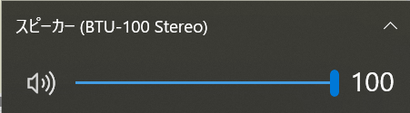

構内放送システム（異常時用）
以下のことを確認してからご使用ください。
1.BluetoothでBTU-100と接続されているか。
2.パソコンの音声出力が「BTU-100
Stereo」になっているか、また音量がMaxになっているかを確認してください。
※
繰り返し間隔の変更は再生中（タイムバーが動いているとき）に行ってください。
※
「見合わせ」・「遅れ」の選択リストは必ずどちらかが「--選択--」になるようにしてください。
※
線区・事由・振替の有無を変更する場合は停止ボタンを押してから変更してください。
線区
見合わせ
遅れ
振替の有無

このタブでの放送回数: 0